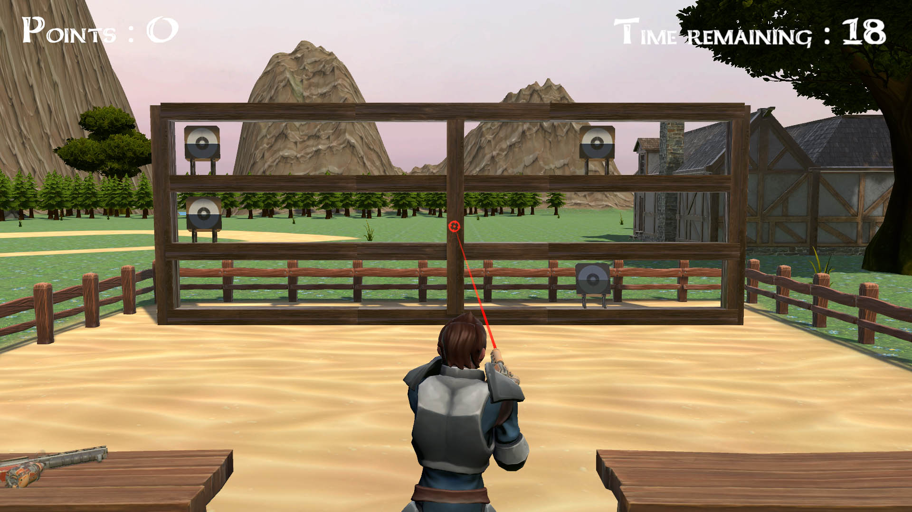
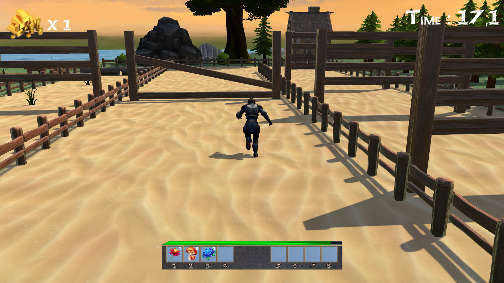
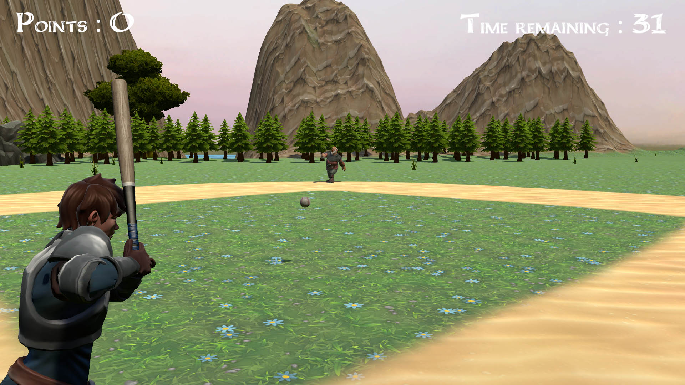

What is Tricky Contest ?
Tricky Contest is my end of year project at Holberton School Paris. It's a game developped on Unity. The goal is the win a competition consisting of 3 mini games. But nobody said you had to play it fair, right ?
You can download the game here.
Here is a quick overview of the game :
More about the game
Let me talk you through a little bit more about Tricky Contest.
As mentionned earlier, there are 3 little games inside the game.
Nevertheless, if you want to, you can influence the results of these games before playing. It's up to you to discover how.
A shooting game...
I implemented a shooting system in Tricky Contest, where the character can lean towards where the player moves the mouse. Targets will appear successivly in the shooting range, just aim and shoot. Easy, right ?
A race...
You can run, jump and roll. But more importantly, you have to handle your stamina bar. If it gets empty, you'll have to wait some time before it fills up again, so be careful !
How about some baseball ?
This game is all about timing. Hit the left mouse button at the right timing and that's all. It's not that easy though.
About Tricky Contest
This project is a non-profit educational project. I wanted to know how far I could go for a limited period of time for my end of year project as a first year student at Holberton School. This project took my about 6 weeks, from collecting 3D assets to hard coding everything. As I would like to work in video games in the near future, so that project really was a good challenge to get to know Unity and C# a bit better, even though I already had some knowledge.